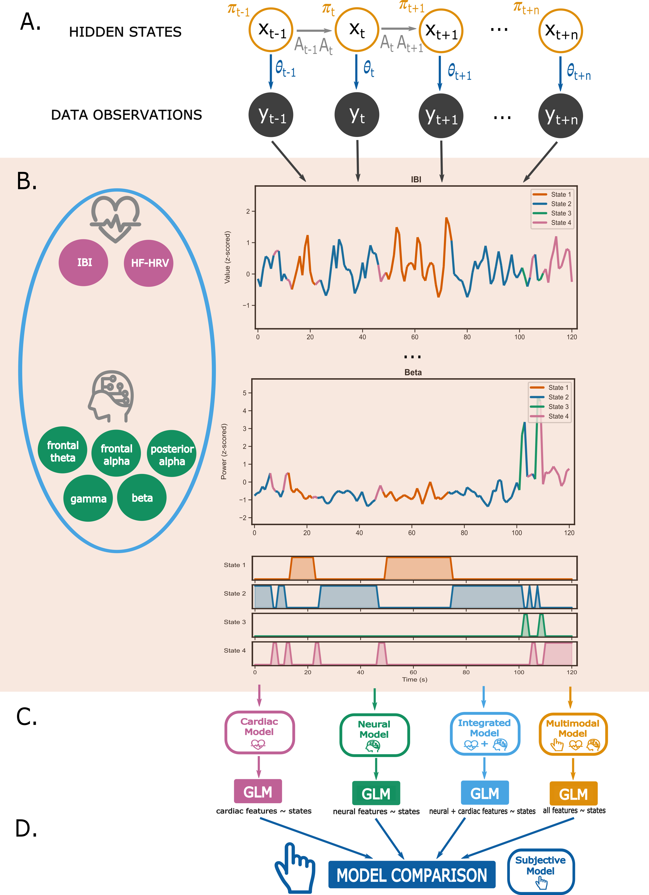
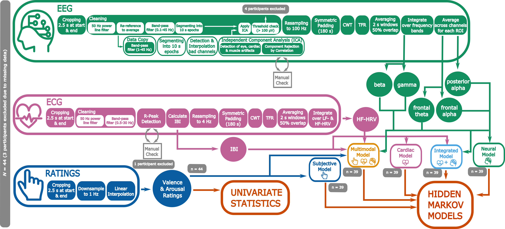

AffectiveVR – code
Last update: September 16, 2024
Status: completed
Description
The whole preprocessing and analysis pipeline can be followed by running main.py.
The main analysis method used in this project is Hidden Markov Models (HMMs). A Hidden Markov Model (HMM) is a data-driven generative statistical model that can be used to identify hidden states in dynamically changing systems, e.g., the brain or the heart (Khalifa et al., 2021; Quinn et al., 2018). The hidden states are mutually exclusive, such that only one state occurs at any one point in time, and Markovian, such that one state is only dependent on the previous state. Each state has an initial probability 𝝅. As the states are hidden and cannot be observed directly in the data, observation models (or emission probabilities, 𝜽) link the data with each hidden state, representing the probability distribution from which the data is drawn while the state is active. Transitions between the states are represented in the transition probability matrix A. Given only a set of observations X, the Baum-Welch algorithm can be used to iteratively compute a set of model parameters λ = (𝝅, A, 𝜽) using both forward and Viterbi algorithms based on the expectation-maximization method. The such identified states can then be compared across different models or conditions.
HMMs were implemented in this project using the Python package hmmlearn (version 0.3.2).

Preprocessing
The script read_xdf.py reads in all data from the LSL-output format .xdf, allows for manual checks, and converts it into BIDS-compatible files and folder structure.
Two different directories exist for the preprocessing of annotation (./code/AVR/preprocessing/annotation) and physiological data (./code/AVR/preprocessing/physiological).
📂 preprocessing
├── 📁 annotation
│ ├── 🐍 preprocessing_annotation_avr_phase1.py
│ ├── 🐍 preprocessing_annotation_avr_phase2.py
│ └── 🐍 preprocessing_annotation_avr_phase3.py
└── 📁 physiological
├── 🐍 preprocessing_physiological_avr_phase3.py
├── 🐍 preprocessing_metadata.py
├── 🐍 bad_after_cleaning_check.py
└── 🐍 feature_extraction.py
Annotation
Preprocessing of annotation data consists of these steps (for phase 3; for phase 1+2, see respective scripts):
- Cropping 2.5 seconds at the start and end of the data to avoid edge artifacts.
- Downsampling to 1 Hz.
- Interpolating missing values linearly so the data of all participants has the same shape.
Physiological
ECG
Preprocessing of ECG data consists of these steps:
- Cropping 2.5 seconds at the start and end of the data to avoid edge artifacts.
- Cleaning: 50 Hz power line noise removal, Band-pass filtering between 0.5 and 30 Hz.
- R-Peak Detection: Automated R-Peak Detection using
neurokit2(Open Source Python Toolbox), manual check of detected R-peaks in interactive window. - IBI Calculation
Feature extraction of ECG data consists of these steps:
- Resampling to 4 Hz.
- Symmetric Padding of 90 seconds mirrored data to the start and end of the data.
- Continuous Wavelet Transform (CWT) using
fCWT(Python Library) to get the Time Frequency Representation (TFR). - Averaging over 2s windows with 50% overlap.
- Integrating over frequency bands to get low-frequency (LF-) and high-frequency (HF-) heart rate variability (HRV).
EEG
Preprocessing of EEG data consists of these steps:
- Cropping 2.5 seconds at the start and end of the data to avoid edge artifacts.
- Cleaning: 50 Hz power line noise removal, re-referencing to average, band-pass filtering between 0.1 and 45 Hz, segmenting into epochs of 10s length, rejection or interpolation of bad channels and epochs using
autorejecton 1 Hz-filtered data. - Independent Component Analysis (ICA) to identify eye, cardiac, and muscle artifacts.
- Final threshold check to exclude any participants with more than 30% of remaining noisy epochs.
Feature extraction of EEG data consists of these steps:
- Resampling to 100 Hz.
- Symmetric Padding of 90 seconds mirrored data to the start and end of the data.
- Continuous Wavelet Transform (CWT) using
fCWT(Python Library) to get the Time Frequency Representation (TFR). - Averaging over 2s windows with 50% overlap.
- Integrating over frequency bands to get alpha, beta, gamma, delta and theta power values.
- Averaging across regions of interest (ROIs): posterior, frontal, whole-brain.

Modelling
In (./code/AVR/modelling) you can find one script that performs a Hidden Markov Model (HMM) analysis on the data from the Physio phase of the AVR project (hmm.py) and one script that compares the five models trained in the previous script in terms of their performance in decoding hidden affective states (compare_models.py).
📂 modelling
├── 🐍 compare_models.py
└── 🐍 hmm.py
Read the first paragraph of this README to learn about HMM. The five models trained in this thesis are:
- A cardiac model, trained only on IBI & HF-HRV.
- A neural model, trained on posterior alpha, frontal alpha, frontal theta, whole-brain gamma & whole-brain beta.
- An integrated model, trained on all seven of these features.
- A multimodal model, trained on the seven physiological features and the rating data.
- A subjective model, trained only on the rating data.
The models are then compared in terms of...
- The general model quality (log-likelihood, AIC, BIC).
- The model's accuracy (correlation with subjective model & fraction of corresponding states).
- The distance between the model's states and the states identified by the subjective model.
Statistics
In (./code/AVR/statistics) you can find one script that calculates univariate statistics for differences in features between different videos (univariate_statistics.py), one script that calculates statistics for differences in features between different hidden states (hmm_stats.py) and one script that fits a general linear model (GLM) to the hidden states as identified in each HMM to test the states for significance (glm.py).
📂 statistics
├── 🐍 univariate_statistics.py
├── 🐍 glm.py
└── 🐍 hmm_stats.py
Data Comparison
In (./code/AVR/datacomparison) you can find scripts to compare the variability in ratings between the Selection Phase and the Evaluation/Physio Phase of the project AVR, respectively.
📂 datacomparison
├── 🐍 compare_variability_phase1_phase2.py
└── 🐍 compare_variability_phase1_phase3.py
Data Visualization
In (./code/AVR/datavisualization) you can find scripts for visualizing the results. radar_plot.pycreates a radar plot to visualize AVR questionnaire data from the Selection phase. raincloud_plot.py creates raincloud plots to visualize the difference in variability between the Selection phase and the Evaluation/Physio phase. plot_descriptives.pyplots the mean ratings, cardiac and neural features of the Physio phase across time. And plot_hidden_states.pycreates plots of the differences of the features between the hidden states as identified by each of the four HMMs.
📂 datavisualization
├── 🐍 plot_descriptives.py
├── 🐍 plot_hidden_states.py
├── 🐍 radar_plot.py
└── 🐍 raincloud_plot.py
Codebase
All code is written in Python 3.11. See below on how to install the code as a python package.
Python
Python code (in the structure of a python package) is stored in ./code/AVR/
To install the research code as package, run the following code in the project root directory:
Configs
Paths to data, parameter settings, etc. are stored in the config file: ./code/configs/config.toml
Private config files that contain, e.g., passwords, and therefore should not be shared,
or mirrored to a remote repository can be listed in: ./code/configs/private_config.toml
Both files will be read out by the script in ./code/AVR/configs.py.
Keep both config toml files and the script in the places, where they are.
To use your configs in your python scripts, do the following:
from AVR.configs import config, paths
# check out which paths are set in config.toml
paths.show()
# get the path to data
path_to_data = paths.DATA
# Get parameter from config
weight_decay = config.params.weight_decay
# Get private parameter from config
api_key = config.service_x.api_key
Fill the corresponding *config.toml files with your data.
For other programming languages, corresponding scripts must be implemented to use these *config.toml files in a similar way.
LICENSE
MIT